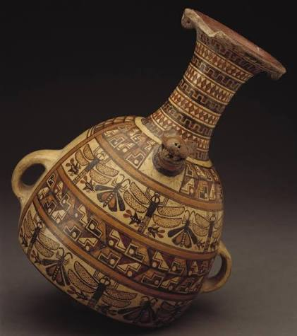

Incan Ceremonial Vessel

Ceremonial Vessel of the Andes
This vessel is inspired by ancient Andean ceramics, featuring a distinctive shape, geometric patterns, and a finish that evokes the look of weathered clay.
$1295.00
Buy NowBack to products